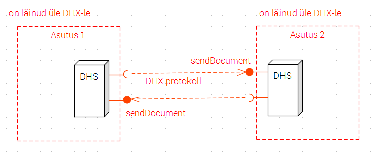

Dokumendivahetusprotokoll DHX
Riigi Infosüsteemi Amet
kavand v 0.9
Sisukord
1 Ülevaade
- 1.1 Protokolli käsitlusala
- 1.2 Dokumendi eesmärk
- 1.3 Väljatöötamine
- 1.4 Disaini kaalutlused
- 5.1 Üldiseloomustus
- 5.2 DHX teenuse väljaarendamine
- 5.3 DHX teenuse avamine
- 5.4 Nimemuster
- 5.5 Reserveeritud nimi “DHX”
- 5.6 Kapsli kasutamine
- 5.7 Unikaalne identifikaator
- 7.1 DHX võimekus
- 7.2 Otsevõimekuse väljaselgitamine
- 7.3 Võimekus läbi vahendaja
- 7.4 Lokaalne aadressiraamat
- 7.5 Saatmine DVK-sse
- 7.6 Dokumendi lugemine edastatuks
- 7.7 Uuesti üritamine
- 7.8 Saatmisalgoritm (informatiivne)
- 8.1 Aadressi kontroll
- 8.2 Valest aadressist teatamine
- 8.3 Kapsli kontroll
- 8.4 Mitme aadressi käsitlus
- 8.5 Vastuvõtmine DVK-st
- 8.6 Saatja kindlakstegemine
Lisa 1 sendDocument spetsifikatsioon
Lisa 2 representationList spetsifikatsioon
Joonised:
- Joonis 1 Lähteolukord: dokumendivahetus DVK kaudu
- Joonis 2 DHX põhiskeem
- Joonis 3 DHX teenusevahendamine
- Joonis 4 Toimimine üleminekuperioodil
1 Ülevaade
1.1 Protokolli käsitlusala
Dokumendivahetusprotokoll DHX on standarditud tehniline ja organisatsiooniline lahendus, mis võimaldab asutustel vahetada dokumente hajus- e detsentraliseeritud põhimõttel.
DHX võimaldab elektroonilist dokumendivahetust korraldada detsentraliseeritult, ilma keskse postitöötlemissõlmeta. Erinevalt vanemast Dokumendivahetuskeskusest (DVK) ei nõua DHX dokumendihaldussüsteemidelt (DHS) enam “postkontoris” posti järel käimist, vaid dokumendid liiguvad otse saatjalt saajale.
Protokoll ei nõua individuaalseid (bilateraalseid) kokkuleppeid, häälestusi, liideste ehitamist vms dokumente vahetavate asutuste vahel. Protokolli järgiv asutus saab teisele asutusele saata dokumendi ilma mingi varasema kontaktita kahe asutuse vahel.
DHX on mõeldud eelkõige avaliku sektori dokumendivahetuse turvaliseks ja kuluefektiivseks korraldamiseks, kuid skeem on laiendatav ka era- ja vabasektori organisatsioonidele.
DHX toetab andmeteenuse vahendamist (X-tee mõistes).
DHX kasutab X-tee taristut.
Protokoll eeldab rakendavate osapoolte motivatsiooni dokumendivahetust efektiivselt ja turvaliselt korraldada: saatja tahet dokumente saata ja vastuvõtja tahet dokumente saada.
1.2 Dokumendi eesmärk
Käesolev dokument määratleb vastavusnõuded, andmevormingud, töötlus- ja menetlusloogikad kõigile DHX-i rakendamisega seotud osapooltele - DHX-i rakendavatele asutustele, DHX-i vahendajatele ja X-tee keskusele. Samuti käsitletakse üleminekut seni DVK kaudu korraldatud dokumendivahetuselt DHX-i kasutamisele.
1.3 Väljatöötamine
Protokolli koostamisel on lähtutud protokollide spetsifitseerimise parimast praktikast [RIA-PP].
Protokoll on kujundatud avastandardina.
Märkus (informatiivne).
Interneti standardimise organisatsioon IETF ([RFC 6852]) seab avastandardi (ingl open standard) kriteeriumiteks:
- kohast protsessi (ingl due process):
- otsuseid tehakse osapoolte suhtes õiglaselt
- standardiloome protsess on läbipaistev
- jälg aruteludest
- avaliku kommenteerimise periood enne lõplikku heakskiitmist ja kasutuselevõttu
- perioodilise läbivaatuse ja täiendamise protsessid on selgelt määratletud
- laiahaardelist konsensust (ingl broad consensus)
- läbipaistvust
- tasakaalustatust - standardimistegevuses ei domineeri ükski konkreetne isik, ettevõte või huvirühm
- vabatahtlikku kasutuselevõttu. IETF on seisukohal, et standardi edukuse määrab lõppkokkuvõttes turg._
Protokolli on välja töötanud Riigi Infosüsteemi Amet.
Protokollis on arvestatud projekti “Dokumendivahetustaristu hajusarhitektuurile üleviimise väljatöötamine” raames mai-juuni 2016 läbiviidud analüüsi (täitja BPW Consulting OÜ) raportis esitatud ettepanekuid ja soovitusi.
Ettepanekud ja märkused palume saata help@ria.ee või luua käesolevas varamus Issue.
Protokolli saab kasutada MIT litsentsi [MIT] alusel.
1.4 Disaini kaalutlused
Protokolli kavandamisel on lähtutud hajusa dokumendivahetuse lahendusele püstitatud ärinõuetest:
- hajusus - lahendus ei tohi nõuda keskset sõlme ega muid keskseid komponente, v.a X-tee taristu poolt pakutavad võimalused (X-tee identimis- ja adresseerimissüsteem, X-tee metateenused).
- kohaletoimetatavus - lahendus peab võimaldama dokumente garanteeritult kätte toimetada kõigile X-teega liitunud asutustele, kes DHX-i kasutusele võtavad.
- adresseeritavus - saatjal peab olema adressaadi nime järgi võimalik kergesti leida aadress, millel dokument teele panna.
- turvalisus - saadetav dokument peab jõudma õige adressaadini ja ainult temani.
- kiire - dokumendi teeloleku aeg peab olema lühike, mitte pikem kui DVK lahenduses.
- õiguspärane - lahendus peab vastama kehtivale õigusele või esitatakse realistlikud ettepanekud õiguse muutmiseks.
- lihtsalt teostatav - tehniline teostus peab olema lihtne, DHS-des nõutavad arendustööd - minimaalse maksumusega.
- madala käitluskuluga - lahendus ei tohi panna DHS-de haldajatele täiendavat süsteemihaldamise koormust.
- e-arvete liiklust võimaldav - lahenduses peab säilitama senise DVKga samaväärse võimaluse töödelda e-arveid.
- agnostiline dokumenditüübi suhtes - protokoll ei tohi seada piiranguid vahetatavate dokumentide tüüpidele, peale dokumendivahetuse “kapsli” (vt [DHX]) kasutamise.
- minimaalne - protokollis ei tohi olla ärinõuete täitmise suhtes vähetähtsaid elemente.
- aluskihina toimimise võimeline - protokolli peale peab olema võimalik rajada edasisi kokkuleppeid.
- X-tee versiooni 6 toetav - protokoll peab toimima X-tee versioonis 6; X-tee varasemate versioonide tugi ei ole vajalik.
- probleemideta üleminek - hajuslahendusele üleminek peab olema kavandatud nii tehniliselt kui ka organisatsioonilises vaates; - üleminek peab olema sujuv; ülemineku riskid peavad olema asjakohaste meedetega maandatud.
- statistikavajaduse rahuldamine - dokumendivahetuse statistika erinevate kasutajate teabevajadused peavad olema arvesse võetud.
- kasutusmugavuse säilimine - DHX-i kasutusel ja ka üleminekuperioodil peab säilima (võib paraneda) tänane DVK kasutusmugavus kasutajale.
Üksteisele vastutöötavate ärinõuete korral on püütud leida tasakaalustatud lahendus.
2 Nõuete keel
Normatiivse tähendusega on käesolev tekst koos lisadega, v.a sõnaga “informatiivne” tähistatud osad. GitHub-i varamu muul sisul on informatiivne tähendus.
Läbiva suurtähega esitatud sõnu tuleb tõlgendada järgmiselt (vrdl [RFC 2119]):
- ”PEAB”, “TOHIB AINULT” - protokolli implementeerija ei saa deklareerida protokollile vastavust, kui nõue on täitmata.
- “PEAKS” - nõue ei pea tingimata olema implementeeritud, kuid implementatsiooni saab lugeda protokollile vastavaks ainult siis, kui nõude täitmisest kõrvalekaldumiseks on kaalukas põhjus.
- “VÕIB” - omadust võib implementeerida; mitteimplementeerimist ei pea põhjendama.
3 Mõisted ja lühendid
| mõiste | seletus |
|---|---|
| adressaat | ingl adressee, asutus, kellele tahetakse dokumenti saata. Adressaadi määrab üheselt asutuse registrikood. Samatähenduslik sõnaga “saaja”. |
| asutus | DHX dokumendivahetuses osalev organisatsioon. Eelkõige Eesti avaliku sektori asutus, aga võib olla ka ettevõte või vabasektori organisatsioon. Asutuselt eeldatakse ametlikku registrisse (riigi ja kohaliku omavalitsuse asutuste riiklik register (RKOARR), äriregister, mittetulundusasutuste register) kantust ja registrikoodi olemasolu. |
| DHX-i dokumendivahetus | dokumentide vahetus X-teel vastavalt DHX protokollile. |
| DHX-i otserakendamine | DHX-i otse, st ilma vahendajata rakendamine. |
| DHX-i otsevõimekus | kui asutus on loonud võimekuse DHX-i rakendada ilma vahendajata, siis ütleme, et asutusel on DHX-i otsevõimekus. |
| DHX-i rakendaja | asutus, kes kasutab DHX-i. |
| DHX-i rakendamine | DHX-i kasutamine, täites kõik DHX-i vastavusnõuded. DHX-i võib rakendada otse või vahendaja kaudu. |
| DHX-i võimekus vahendaja kaudu | DHX-i kasutamine läbi vahendaja. Vt DHX otserakendamine. |
| DHX-i võimekus | asutuse võimekus saata ja vastu võtta dokumente vastavalt DHX protokollile. DHX võimekuse võib teostada kas otse (vt DHX otsevõimekus) või läbi vahendaja (vt DHX võimekus vahendaja kaudu). |
| DHX teenus | standarditud nimemustriga EE/GOV/<registrikood>/DHX/sendDocument X-tee teenus, mille kaudu DHX-i otserakendaja või vahendaja võtab vastu dokumente. |
| DHX vahendamine | X-tee kasutusmuster, kus vahendaja rollis tegutsev X-tee liige (DHX vahendaja) võimaldab oma infosüsteemi vahendusel asutuse juurdepääsu DHX dokumendivahetusele. Vt DHX-i otserakendamine. |
| DHX vahendaja, pikemalt DHX dokumendivahetusteenuse vahendaja, lühidalt lihtsalt vahendaja | X-tee liige, kes osutab asutusele teenust, vahendades DHX dokumendiedastust. Tüüpiliselt DHS-i pilve- või majutusteenuse osutaja; võib olla nii erasektori teenuseosutaja kui ka avaliku sektori asutus, kes osutab teenust teisele asutusele. |
| DHX vahendajate grupp | tehniline abinõu DHX vahendajate nimekirja pidamiseks. DHX vahendajate grupp on osa X-tee globaalsest konfiguratsioonist. |
| DHX vahendajate nimekiri | X-tee keskuse (RIA) poolt peetav nimekiri DHX dokumendivahetusteenuse vahendajatest. |
| DHS pilveteenusena | suhe, kus üks organisatsioon (ettevõte või teine asutus) pakub asutusele DHS-i tehnilist keskkonda. Ühes tehnilises keskkonnas võib olla mitu “virtuaalset” DHS-i. Näiteks Majandus- ja Kommunikatsiooniministeerium pakub DHS-i teenust ministeeriumi haldusala asutustele; Koolide infosüsteem KIS pakub DHS-i teenust reale lasteaedadele. DHS pilveteenusena ja DHX vahendamine võivad olla ühitatud, kuid on siiski erinevad mõisted. Majutaja ei pea alati olema vahendaja. Vahendussuhe on siis, kui X-tee liiklus käib vahendaja sertifikaadiga. |
| dokument | asutuses töödeldav dokument Eesti avaliku sektori dokumendihalduse tähenduses. Võib koosneda mitmest failist. Edastatakse elektroonilise dokumendivahetuse kapslis. |
| dokumendihaldussüsteem, DHS | asutuse elektroonilise dokumendihalduse, sh dokumendivahetuse teenindamisele spetsialiseerunud infosüsteem. |
| elektroonilise dokumendivahetuse kapsel | lühidalt “kapsel” - dokumenti ja metaandmeid sisaldav XML-struktuur. |
| globaalne konfiguratsioon | X-tee metaandmekogum, nimekiri X-tee liikmetest, alamsüsteemidest ja gruppidest. Vt [PR-GCONF], [PR-META]. |
| DVK | Dokumendivahetuskeskus [DVK]. |
| RIA | Riigi Infosüsteemi Amet. |
| registrikood | asutuse ametlik registrikood. Nt 70002093 Kadrioru lasteaed. |
| vastuvõttev süsteem | dokumenti X-teel DHX protokolli kohaselt vastuvõttev infosüsteem (võib olla ka vahendaja infosüsteem ja üleminekuperioodil DVK). |
| saadetis | ingl consignment, dokument, mida saatev süsteem üritab vastuvõtvale süsteemile saata. Ebaõnnestumise korral tehakse mitu üritust. |
| saadetise id | ingl consignment id, dokumendi saatmisürituste seeriale antud unikaalne identifikaator. Vt 7.7. |
| saaja | asutuse, kellele dokument on adresseeritud. Samatähenduslik sõnaga “adressaat”. Vahendamise puhul võib saajana käsitada ka vahendajat. Sõnakasutusest peab alati selguma, kumba silmas peetakse. vt “saatja”. |
| saatja | dokumenti saatev asutus; saatja võib kasutada vahendajat. Vahendamise puhul võib ka vahendajat käsitada saatjana. Sõnakasutuse peab alati selguma, kumba silmas peetakse. Vt “saaja”. |
| saatev süsteem | dokumenti X-teel DHX protokolli kohaselt saatev infosüsteem (võib olla ka vahendaja infosüsteem). |
| teenuse identifikaator | X-tee [X-tee] versiooni 6 nõuete kohane X-tee teenuse identifikaator. Identifitseerib unikaalselt X-tee teenuse nii Eesti X-teel kui ka X-tee implementatsioonide rahvusvahelises võrgus. Koosneb X-tee liikme identifikaatorist, teenuse koodnimetusest ja valikulisest versiooninumbrist. Näiteks: EE/GOV/70003158/DHX/sendDocument. |
| vahendaja | vt “DHX vahendaja”. |
| vahendatav | asutus, kes on loonud DHX võimekuse vahendaja kaudu. DHX dokumendivahetuses X-teel oma sertifikaadiga ei osale, vaid kasutab vahendaja teenust. |
| vahendusnimekiri | DHX dokumendivahendusteenuse vahendaja poolt X-teel teenusena pakutav nimekiri asutustest, keda ta vahendab. Mitte segi ajada DHX vahendajate nimekirjaga. |
| üleminekuperiood | Dokumendivahetuskeskuse (DVK) kasutamiselt DHX kasutamisele ülemineku periood. Perioodi alguse ja lõpu määrab X-tee keskus. |
| X-tee keskus | X-tee haldaja. X-tee keskuse rolli täidab RIA. X-tee keskus registreerib X-tee alamsüsteeme “DHX” ja peab DHX vahendajate nimekirja. |
4 Lähteolukord
DHS-id vahetavad praegu dokumente DVK kaudu, kasutades tingliku nimetusega “DVK protokolli”. “DVK protokolli” määravad elektroonilise andmevahetuse metaandmete loend [Kapsel], DVK liideste spetsifikatsioon [DVK spetsifikatsioon] ja [DVK pidamise kord], laiemas plaanis ka “Asjaajamise ühtsed alused” [AÜK]. Väiksemal arvul on dokumendivahetusliideseid loodud ka muude dokumente töötlevate infosüsteemide vahele. Need liidesed ei ole standarditud. Laienev dokumendiringlus ja dokumente vahetavate infosüsteemide tihenev võrgustik (dokumendivahetus tänapäeval ei piirdu „puhaste“ DHS-dega – dokumente vahetavad ka infosüsteemid, kus dokumendihaldus klassikalises mõttes on ainult üks andmetöötluse liik) nõuab alternatiivi ühe keskse postkastiserveri kaudu toimuvale dokumendiliiklusele.

Joonis 1. Lähteolukord: dokumendivahetus DVK kaudu
5 DHX teenus
5.1 Üldiseloomustus
DHX teenus on standardse nimemustri ja töötlusloogikaga X-tee teenus, millega asutus saab saata teisele asutusele dokumente.

Joonis 2. DHX põhiskeem
DHX teenuse kasutamine on interaktsioon, mis koosneb kahest sõnumisaatmisest:
- dokumendi saatja saadab teenusele sendDocument X-tee päringsõnumi (päringu)
- dokumendi saaja saadab vastussõnumi kinnitusega dokumendi kättesaamise kohta.
Märkus. Päring- ja vastussõnum moodustavad X-teel standardselt kasutatava nn “sünkroonse” request-response sõnumipaari.
Kui dokument on valesti adresseeritud või valesti formeeritud, siis saadetakse vastussõnumis asjakohane veateade.
Dokument edastatakse päringsõnumis.
Dokumendid edastatakse nn tõukemeetodil (ingl push). Dokumendi saatja algatab saatmise pöördumisega adressaadi_ sendDocument _teenuse poole.
5.2 DHX teenuse väljaarendamine
DHX-i rakendav asutus (või tema DHS vahendusteenuse või DHS majutusteenuse pakkuja) PEAB arendama oma DHS-is välja DHX teenuse ja käitama seda.
Protokoll ei välista olukordi, kus DHS-is luuakse ainult DHX protokolli nõuetele vastav saatmis- või vastuvõtmisvõimekus. Tehniliselt selleks takistusi ei ole. Tehniliselt selleks takistusi pole. Kuna selliste ebasümmeetriliste lahenduste ärivajadus pole selge, siis lihtsuse hoidmise eesmärgist lähtudes protokoll ei sätesta eraldi profiile süsteemidele, mis piirduvad ainult saatmise või vastuvõtmisega.
DHX-i rakendaja teostatud DHX teenus PEAB vastama lisas 1 esitatud täpsemale spetsifikatsioonile.
5.3 DHX teenuse avamine
DHX-i rakendav asutus PEAB avama DHX teenuse kõigile asutustele, kellega ta soovib dokumente vahetada. Kui asutus turvapoliitika vm kaalutlustel ei pea otstarbekaks DHX teenuse avamist kõigile X-tee liikmetele, siis VÕIB ta DHX teenuse avada konkreetsetele X-tee liikmetele (pääsuõiguste andmisega X-tee turvaserveris).
DHX on mõeldud eelkõige universaalse dokumendivahetuskokkuleppena.
Üleminekuperioodiks PEAB DHX teenuse avama ka DVK-le.
DVK edastab dokumente asutustelt, kes ei ole veel DHX-i võimekust loonud.
5.4 Nimemuster
DHX teenuse nimi PEAB järgima mustrit EE/<liikmeklass>/<registrikood>/DHX/sendDocument, kus
- EE on X-tee Eesti instantsi nimi
- <liikmeklass> on X-tee liikmeklass (vastavalt vahendaja õiguslikule vormile kas GOV või PRI)
- DHX on teenuse ülesleidmist tagav, käesoleva protokolliga fikseeritud X-tee alamsüsteemi nimi ja
- <registrikood> on asutuse registrikood.
Näide: EE/GOV/70003158/DHX/sendDocument
5.5 Reserveeritud nimi “DHX”
DHX teenus PEAB kasutama X-tee alamsüsteemi “DHX”. X-tee keskus EI TOHI registreerida ühegi asutuse alamsüsteemi “DHX” teiseks otstarbeks.
5.6 Kapsli kasutamine
Dokumendi PEAB edastama ametlikult kinnitatud elektroonilise andmevahetuse metaandmete loendile vastavas “kapslis” [Kapsel].
Dokumendi kapslis edastatakse muuhulgas adressaadiks oleva asutuse registrikood.
Märkus (informatiivne).
DHX-i kasutuselevõtmisel tekib vajadus täpsustada kapsli [Kapsel] metaandmete elementide tähendust või isegi anda välja uus redaktsioon. Uus redaktsioon on tõenäoliselt mõtet anda välja pärast DHX-ile üleminekuaja lõppu (kui DVK lõplikult käigust eemaldatakse).
Alloleva tabel esitab kommenteeritud nimekirja kapsli elementidest, mida DHX-i kasutuselevõtmine puudutab. Täieliku kapsli elementide spetsifikatsiooniga on võimalik tutvuda [Kapsel].
| element | tähendus DHX-i kasutamisel |
|---|---|
| Transport 1. DVK Saatja | Transport 1. Dokumendi saatja |
| Transport 2. DVK Saaja | Transport 2. Dokumendi saaja |
| XI DVK dokumendi metaandmed | ei kasutata |
5.7 Unikaalne identifikaator
Saatev süsteem PEAB dokumendi saatmisürituste seeriale andma unikaalse identifikaatori (saadetise id, ingl consignment id). (Vt ka jaotis 7.7 Uuesti üritamine.)
6 Vahendamine
6.1 Vahendamise mõiste
Vahendamise korral osutab dokumentide X-teel saatmise ja vastuvõtmise teenust asutusele vahendaja. Asutus ise X-teega DHX kontekstis ei suhtle. Asutus ei pea isegi olema X-tee liige. Vahendaja esineb X-teel oma nime all. Vahendaja võib olla nii erasektori ettevõte kui ka avaliku sektori asutus.
Asutus VÕIB rakendada DHX-i kas otse (s.t iseseisvalt) või vahendaja kaudu.
Märkus (informatiivne). Vahendamine erineb majutamisest. Paljud asutused majutavad oma DHS-e majutus- ja pilveteenuste osutajate juures. Majutamine võib hõlmata nii X-tee turvaserveri kui ka DHS-i majutamist (pilveteenusena osutamist). DHX-i seisukohalt omab tähtsust, kas asutuse DHS suhtleb X-teel asutuse X-tee sertifikaadi abil või mitte. Kõiki suhteid, kus suhtlemine X-teel toimub mitte asutuse enda, vaid teenusepakkuja X-tee sertifikaadi abil, käsitletakse vahendamisena.
Majutamise korral tuleb DHX-i rakendamisel tagada käesoleva protokolli nõuete täitmine. Kuidas seda teha, sõltub konkreetsest suhtest majutaja ja asutuse vahel ning ei ole käesoleva protokolli käsitlusalas.
DHX vahendamisel arendab DHX teenuse välja, avab teistele asutustele ja käitab teenust vahendaja. Joonisel 3 on esitatud interaktsiooni põhimõtteskeem vahendamise korral.

Joonis 3 DHX teenusevahendamine
Vahendamisele kehtivad X-tee määrusest tulenevad nõuded: vahendajana end X-teel registreerimise kohustus, andmeteenuse vahendamise korra (poliitika) koostamise ja avalikustamise kohustus jm (vt [X-tee määrus] § 13).
6.2 Vahendajate nimekiri
DHX rakendamisel läbi vahendaja PEAB asutus sõlmima lepingu DHX vahendajaga. Kasutada TOHIB AINULT X-tee keskuse poolt DHX vahendajate nimekirja lisatud vahendajaid.
Vahendajate nimekiri on nimekiri DHX dokumendivahetusteenuse vahendajatest.
Vahendajate nimekirja peab X-tee keskus (RIA).
Tehniliselt teostatakse vahendajate nimekiri DHX vahendajate grupina. DHX vahendajate grupp on osa X-tee globaalsest konfiguratsioonist. Vahendajate nimekiri on X-tee globaalse konfiguratsiooni osana avalikult kättesaadav kõigile X-tee liikmetele.
Vahendajana tegutseda sooviv asutus või ettevõte PEAB end vahendajana X-teel registreerima. Registreerimise täpse korra kehtestab X-tee keskus.
X-tee keskus PEAB pidama DHX vahendajate nimekirja ajakohasena.
6.3 Vahendusnimekiri
Vahendusnimekiri on vahendaja peetav nimekiri asutustest, keda ta vahendab.
Vahendaja PEAB pidama vahendusnimekirja.
Vahendaja PEAB hoidma vahendusnimekirja autentsena ja ajakohasena. Autentsus tähendab seda, et vahendusnimekiri peab esitama vahendussuhteid tõeselt ja täielikult. Ajakohasus tähendab seda, et vahendusnimekiri peab igal ajahetkel esitame kõik kehtivad vahendussuhted. Vahendusnimekiri VÕIB sisaldada teavet lõppenud ja tulevikus jõustuvate vahendussuhete kohta (esitatakse väljade startDate ja endDate abil).
Vahendaja PEAB vahendusnimekirja tegema kättesaadavaks X-tee teenusena.
Vahendusnimekirja teenuse nimi PEAB järgima mustrit EE/<liikmeklass>/<registrikood>/DHX/representationList, kus
- EE on X-tee Eesti instantsi nimi
- <liikmeklass> on X-tee liikmeklass (väärtus vastavalt X-tee protokollile - vastavalt vahendaja õiguslikule vormile kas GOV, COM, NGO või NEE)
- DHX on teenuse ülesleidmist tagav, käesoleva protokolliga fikseeritud X-tee alamsüsteeminimi ja
- <registrikood> on asutuse registrikood.
Näide: EE/COM/40001111/DHX/representationList
DHX-i rakendaja teostatud vahendusnimekirja teenus PEAB vastama lisas 2 esitatud täpsemale spetsifikatsioonile.
7 Saatmine
7.1 DHX võimekus
Saatev süsteem PEAB välja selgitama, kas adressaadil on DHX võimekus.
DHX võimekus võib olla otsevõimekus või võimekus vahendaja kaudu.
Märkus (informatiivne). Kõnelda võib ka kitsamalt DHX-i saatmisvõimekusest ja DHX-i vastuvõtmisvõimekusest. DHX ei nõua rakendamise sümmeetrilisust: tehnilisi takistusi ainult saatva DHS-i või ainult vastu võtva DHS-i loomisele ei ole. Kuid selliste lahenduste kasutusjuht (use case) pole selge. Sümmeetrilise võimekuse nõude kehtestamine on administratiivne otsus ja jääb käesoleva protokolli käsitlusalast väljapoole. Protokoll eeldab, et osapooled lähtuvad protokolli rakendamisulatuse valimisel reaalsest vajadusest dokumente saata ja saada.
7.2 Otsevõimekuse väljaselgitamine
Otsevõimekust PEAB välja selgitama esimeses järjekorras (enne vahendaja kaudu võimekuse tuvastamist).
Saatev süsteem PEAKS otsevõimekuse välja selgitama X-tee globaalse konfiguratsioonifaili põhjal. Otsevõimekuse tunnuseks on DHX alamsüsteemi olemasolu asutusel. Globaalse konfiguratsiooni VÕIB alla laadida X-tee keskusest või kasutada X-tee turvaserveri poolt allalaetud, turvaserveri liidese poolt pakutud globaalset konfiguratsioonifaili.
Kui saatev süsteem peab DHX otsevõimekuse väljaselgitamist X-tee globaalse konfiguratsioonifaili põhjal tehniliselt liiga keerukaks, siis VÕIB otsevõimekust kontrollida ka otsese saatmisüritusega.
Kui turvaserver vastab, et adressaadil alamsüsteem DHX puudub, siis sellest võib järeldada, et adressaadil DHX otsevõimekus puudub.
Saatja turvaserver laeb perioodiliselt X-tee keskserverist alla teavet X-tee konfiguratsiooni kohta [PR-GCONF], sh teavet X-tee liikmete poolt määratletud alamsüsteemide ja turvaserverite kohta. Saatja turvaserver teeb ülalnimetatud konfiguratsiooniteabe põhjal kindlaks, kas adressaat on määratlenud DHX alamsüsteemi. Kui ei ole, siis DHX võimekus puudub.
Adressaadil otsevõimekuse olemasolul PEAB dokumendi saatma adressaadile otse.
7.3 Võimekus läbi vahendaja
Otsevõimekuse puudumise korral PEAB saatev süsteem kontrollima, kas adressaadil on DHX võimekus läbi vahendaja.
DHX võimekuse läbi vahendaja kontrollimiseks PEAB saatev süsteem:
- alla laadima X-tee keskusest X-tee globaalse konfiguratsiooni faili või kasutama turvaserveri poolt allalaetud globaalse konfiguratsiooni faili;
- leidma failist vahendajate nimekirja (DHX vahendajate grupi);
- käima kõik vahendajad läbi ning pärima X-tee kaudu vahendusnimekirjad;
- kindlaks tegema, kas adressaat sisaldub vahendusnimekirjades;
- kontrollima vahendussuhte ajalist kehtivust (teenuse representationList vastussõnumi väljade startDate ja endDate abil).
Kui adressaadil puudub DHX otsevõimekus, kuid on DHX võimekus läbi vahendaja, siis PEAB saatev süsteem saatma dokumendi vahendajale.
7.4 Lokaalne aadressiraamat
Saatev süsteem VÕIB DHX-i võimekuse väljaselgitamise tulemust puhverdada, moodustades nn lokaalse aadressiraamatu. Puhvri (lokaalse aadressiraamatu) värskendamise periood PEAB olema konfigureeritav.
7.5 Saatmine DVK-sse
Kui saatev süsteem on kindlaks teinud, et adressaadil puudub DHX võimekus ja käimas on üleminekuperiood, siis PEAB saatev süsteem üritama dokumenti saata DVK sendDocument teenusesse.
Tegu on juhuga, kus adressaat ei ole veel DHX-i võimekust loonud. Adressaat võib olla veel DVK kasutaja. DVK saadab sendDocument teenusesse saadetud dokumendi adressaadile edasi. Kui adressaat ei ole DVK kasutaja, siis teatab DVK_ adressaat tundmatu_. Saatev süsteem on kõik võimalused ammendanud ja tuleb konstateerida, et dokumenti ei saa edastada - vähemalt seni, kuni adressaat ei ole DHX võimekust loonud.
7.6 Dokumendi lugemine edastatuks
Saatev süsteem PEAB lugema dokumendi edastatuks, kui on saanud sendDocument teenuselt positiivse vastuskoodiga vastussõnumi.
Kinnitus dokumendi kättesaamise kohta saadetakse X-tee päring-vastus (request-response) sõnumipaari vastussõnumis. Kui osapooled vajavad kõrgema äriloogika kihi taseme kinnitusi, siis neid võib realiseerida DHX protokolli väliselt või DHX protokolli pealiskihina.
7.7 Uuesti üritamine
Kui adressaadiga ei saa ühendust või kättesaamise kinnitust ei tule, siis PEAB mõne aja pärast saatmist uuesti üritama.
Märkus (informatiivne). Uuestisaatmise teostamisel võib võrdluseks võtta DVK-ga liidestatud DHS-des kasutatud loogikat.
Tühipäringute arvu vähendamiseks PEAKS kasutada eksponentsiaalse taganemise (exponential back-off) algoritmi [EXP].
Saatmisürituste arv PEAB olema lõplik ja saatva süsteemi konfiguratsioonis määratav.
7.8 Saatmisalgoritm (informatiivne)
Alljärgnev saatmisalgoritm illustreerib üht võimalikku viisi programmiliselt teostada dokumendi saatmist. Algoritmis on kasutatud Go keele [GOLANG] konstruktsioone. Algoritm on informatiivse tähendusega. Protokolli implementeerija võib saatmisega seotud nõuded täita oma valitud viisil. Algoritm ei käsitle kapsli koostamist.
- Funktsioon
adressaat_kasutab_DHXi_otseselgitab välja, kasutades X-tee globaalset konfiguratsiooni, kas asutuselaon DHX-i otsevõimekus. - Funktsioon
adressaat_kasutab_vahendajatselgitab välja, kasutades X-tee gruppiDHX vahendajadja vahendajate X-tee teenuseidrepresentationList, kas asutusakasutab DHX-i teenusevahendajat. - Funktsioon
yritaSaataüritab saata dokumentidX-tee liikmevastuvõtjaalamsüsteemiDHXteenuselesendDocument. Kui saatmine õnnestub, siis tagastabtrue. - Funktsioon
vahendaja_registrikoodleiab asutuseavahendaja registrikoodi. - Funktsiooni
saadaDokumentkutsub välja ülalnimetatud funktsioone ja korraldab dokumendidsaatmise adressaadile registrikoodigaa. Tehakse kolm saatmisüritust, teist korda üritades peetakse vahet üks tund ja kolmandat korda üritades üks ööpäev.
function saadaDokument(d Dokument, a Registrikood) {
var vastuvotja // asutus, kellele süsteemile dokument teele panna (v.o vahendaja)
var saatmisyritus = 0 // saatmisürituse järjenumber
var maksimaalseltSaatmisyritusi = 3 // väärtus p.o konfigureeritav
// kõigepealt selgitatakse välja, kas adressaat rakendab DHX-i otse
if adressaat_kasutab_DHXi_otse(a) {
vastuvotja = a
// kui otse ei rakenda, siis kas vahendaja kaudu?
} else if adressaat_kasutab_vahendajat(a) {
vastuvotja = vahendaja_registrikood(a)
// kui DHX-i võimekus puudub, siis üleminekuperioodil proovitakse saata veel DVK-sse
} else if yleminekuperiood_kestab() {
vastuvotja = DVK
} else {
return "Ei saa saata."
}
// saatmisüritused
for saatmisyritus < maksimaalseltSaatmisyritusi {
saatmisyritus = saatmisyritus + 1
// Viivitusaeg enne saatmisürituse kordamist
if saatmisyritus == 2 {
time.Sleep(time.Hour)
} else if saatmisyritus == 3 {
time.Sleep(24 * time.Hour)
}
if yritaSaata(d, vastuvotja) { // saatmine edukas
return "Saatmine edukas"
}
}
return maksimaalseltSaatmisyritus + " üritust, kõik ebaõnnestusid"
}8 Vastuvõtmine
8.1 Aadressi kontroll
Vastuvõttev süsteem PEAB kontrollima, et dokument on saadetud õigele aadressile.
Vahendamise puhul PEAB vastuvõttev süsteem kontrollima, kas adressaat on vahendaja klient (on vahendusnimekirjas).
8.2 Valest aadressist teatamine
Valesti adresseeritud dokumendi korral PEAB vastuvõttev süsteem saatma saatjale veateate Vale aadress.
8.3 Kapsli kontroll
Vastuvõttev süsteem PEAB kontrollima, et dokument tuli nõuetekohases kapslis. Kontroll PEAB sisaldama vähemalt XML skeemile vastavuse kontrollimist. Vigase kapsli korral PEAB saatma vastava veateate Vigane kapsel. Vastuvõttev süsteem VÕIB teha täiendavaid kontrolle semantilisel või äriloogikalisel tasandil.
8.4 Mitme aadressi käsitlus
Vahendajana tegutsev süsteem PEAB mitmele aadressile saadetud dokumendi edastama kõigile oma klientidele, kes on dokumendi kapsli transpordiblokis adressaatidena nimetatud.
8.5 Vastuvõtmine DVK-st
DHX-i võimekuse loonud süsteem PEAB üleminekuperioodil dokumente vastu võtma ka DVK-st.
Tehniliselt seisneb see selles, et DHX-le üleläinud süsteem peab avama oma DHX teenuse ka DVK-le. DVK edastab dokumente nendelt asutustelt, kes ei ole veel DHX-le üle läinud.
8.6 Saatja kindlakstegemine
Dokumendi saatja saab kindlaks teha kahel viisil: 1) dokumendi kapslis sisalduvate saatjat kirjeldavate metaandmete abil; 2) X-tee päringsõnumi X-tee päiseväljade client [PR-MESS] ja representedParty [X-EXT] abil.
Märkus (informatiivne). Vastavalt X-tee sõnumiprotokolli kolmanda osapoole esindamise laiendusele peab vahendaja märkima asutuse, keda ta esindab, X-tee sõnumipäisesse välja representedParty [X-EXT].
Vastuvõttev süsteem PEAB kontrollima dokumendi kapslis sisalduvate saatjat kirjeldavate metaandmete ja X-tee päringsõnumi X-tee päiseväljade client ja representedParty kooskõlalisust. Lahknevuste korral PEAB dokumendi tagasi lükkama.
Vahendajalt dokumendi vastuvõtmisel PEAB kontrollima, kas vahendaja on vahendajate nimekirjas. Kontrolli tulemust VÕIB puhverdada.
9 Üleminek
9.1 Üleminekuperiood
Üleminek DHX protokollile toimub etteantud perioodi jooksul. Üleminekuperiood algab kõigile asutustele üheaegselt. Perioodi algusest teavitab X-tee keskus. Üleminekuperiood lõpeb DVK tegevuse lõpetamisega.
Toimimine üleminekuperioodil (informatiivne)
Üleminekuperioodil arendavad asutused välja oma DHS-des DHX protokolli kohase dokumentide saatmise ja vastuvõtmise võimekuse. Tehniliselt tähendab “DHX-i võimekus” DHX protokolli kohase X-tee teenuse pakkumist ja võimet teiste asutuste samasuguse teenuse poole pöörduda.
DHX-i võimekus ei teki asutustes üheaegselt, sest arendused valmivad erinevatel aegadel. Joonis 4 selgitab DHX-le üle läinud ja veel üle minemata süsteemide koostoimimist üleminekuperioodil.

Joonis 4. Toimimine üleminekuperioodil
Asutused 1 ja 2 on üle läinud DHX protokollile ja vahetavad dokumente üksteisega DHX-i abil otse. Asutus 3 kasutab veel vana, “DVK protokolli”.
DVK täidab üleminekuperioodil uue ja vana protokolli (DHX-i ja DVK) vahelise teisendaja rolli.
UK tähistab RIA poolt väljatöötatavat “universaalset tarkvarakomponenti”, mille eesmärgiks on kergendada DHS-de ümberhäälestamist DHX-i kasutamisele. UK kasutamine ei ole kohustuslik.
Üleminekuperioodil niipea, kui asutuse DHS-is on tekkinud DHX protokolli võimekus (arendus on lõppenud), PEAB hakkama dokumendi saatmisel kasutama DHX teenust.
Üleminekuperioodil kui osutub, et adressaat ei ole veel dokumentide vastuvõtmise DHX-teenust loonud (teenus ei ole X-teel leitav), siis PEAB dokumendi saatma DVK kaudu, kasutades DVK teenust sendDocument ja märkides adressaadi dokumendi metaandmete kapslis.
DHX võimekuse saavutanud asutus PEAB DVK kasutamisest loobuma.
9.2 DVK toimimine üleminekuperioodil
DVK-d hoitakse töös kogu üleminekuperioodi vältel. DVK-d täiendatakse üleminekuperioodil toimimiseks vajaliku funktsionaalsusega.
DVK pakub teenust sendDocument, millega DHX-i võimekuse loonud asutus saab edastada dokumendi edasisaatmiseks DHX võimekust veel mitteomavale asutusele. Edasisaatmise teostab DVK.
DVK toimib üleminekuperioodil DHX teenusevahendajana (RIA lisatakse vahendajate nimekirja).
DHX-i võimekuse loonud asutusele adresseeritud dokumendi laekumisel DVK-sse üritab DVK seda kohe edasi saata.
DVK lülitatakse välja siis, kui kõik DVK asutused on DHX protokolli võimekuse loonud või üleminekuperioodi tähtaja saabudes.
10 Vastavusnõuded
Käesolev jaotis võtab kokku nõuded (ingl conformance criteria, vt nt RFC 2049), mis peavad olema täidetud, et dokumente vahetava süsteemi saaks deklareerida DHX-le vastavaks.
Alljärgnev käsitlus piirdub koostalitlusvõimet tagavate tarkvaratehniliselt rakendatavate meetmetega ja süsteemide tehniliste omadustega. DHX dokumendivahetuse korraldamiseks võivad dokumendivahetuse osapooled ja koordinaatorid kehtestada mitmesuguseid (täiendavaid) organisatsioonilisi meetmeid. Need ei ole protokolli käsitlusalas.
10.1 Vastavusnõuded kõigile DHX dokumente vahetavatele süsteemidele
| jaotis | nõue |
|---|---|
| 5.2 | DHX-i rakendav asutus (või tema DHS vahendusteenuse või DHS majutusteenuse pakkuja) PEAB arendama oma DHS-is välja DHX teenuse ja käitama seda. |
| 5.2 | DHX-i rakendaja teostatud DHX teenus PEAB vastama lisas 1 esitatud täpsemale spetsifikatsioonile. |
| 5.3 | DHX-i rakendav asutus PEAB avama DHX teenuse kõigile asutustele, kellega ta soovib dokumente vahetada. Kui asutus turvapoliitika vm kaalutlustel ei pea otstarbekaks DHX teenuse avamist kõigile X-tee liikmetele, siis VÕIB ta DHX teenuse avada konkreetsetele X-tee liikmetele (pääsuõiguste andmisega X-tee turvaserveris). |
| 5.3 | Üleminekuperioodiks PEAB DHX teenuse avama ka DVK-le. |
| 5.4 | DHX teenuse nimi PEAB järgima mustrit EE/<liikmeklass>/<registrikood>/DHX/sendDocument. |
| 5.5 | DHX teenus PEAB kasutama X-tee alamsüsteemi “DHX”. |
| 5.6 | Dokumendi PEAB edastama ametlikult kinnitatud elektroonilise andmevahetuse metaandmete loendile vastavas “kapslis”. |
| 5.7 | Saatev süsteem PEAB dokumendi saatmisürituste seeriale andma unikaalse identifikaatori (saadetise id, ingl consignment id). |
| 6.2 | DHX rakendamisel läbi vahendaja PEAB asutus sõlmima lepingu DHX vahendajaga. Kasutada TOHIB AINULT X-tee keskuse poolt DHX vahendajate nimekirja lisatud vahendajaid. |
| 7.1 | Saatev süsteem PEAB välja selgitama, kas adressaadil on DHX võimekus. |
| 7.2 | Otsevõimekust PEAB välja selgitama esimeses järjekorras (enne vahendaja kaudu võimekuse tuvastamist). |
| 7.2 | Saatev süsteem PEAKS otsevõimekuse välja selgitama X-tee globaalse konfiguratsioonifaili põhjal. |
| 7.2 | Adressaadil otsevõimekuse olemasolul PEAB dokumendi saatma adressaadile otse. |
| 7.3 | DHX võimekuse läbi vahendaja kontrollimiseks PEAB saatev süsteem: a) alla laadima X-tee keskusest X-tee globaalse konfiguratsiooni faili või kasutama turvaserveri poolt allalaetud globaalse konfiguratsiooni faili; b) leidma failist vahendajate nimekirja (DHX vahendajate grupi); c) käima kõik vahendajad läbi ning pärima X-tee kaudu vahendusnimekirjad; d) kindlaks tegema, kas adressaat sisaldub vahendusnimekirjades. |
| 7.3 | Kui adressaadil puudub DHX otsevõimekus, kuid on DHX võimekus läbi vahendaja, siis PEAB saatev süsteem saatma dokumendi vahendajale. |
| 7.4 | Puhvri (lokaalse aadressiraamatu) kasutamisel PEAB värskendamise periood olema konfigureeritav. |
| 7.5 | Kui saatev süsteem on kindlaks teinud, et adressaadil puudub DHX võimekus ja käimas on üleminekuperiood, siis PEAB saatev süsteem üritama dokumenti saata DVK sendDocument teenusesse. |
| 7.6 | Saatev süsteem PEAB lugema dokumendi edastatuks, kui on saanud sendDocument teenuselt positiivse vastuskoodiga vastussõnumi. |
| 7.7 | Kui adressaadiga ei saa ühendust või kättesaamise kinnitust ei tule, siis PEAB mõne aja pärast saatmist uuesti üritama. |
| 7.7 | Tühipäringute arvu vähendamiseks PEAKS kasutada eksponentsiaalse taganemise (exponential back-off) algoritmi [EXP]. |
| 7.7 | Saatmisürituste arv PEAB olema lõplik ja saatva süsteemi konfiguratsioonis määratav. |
| 8.1 | Vastuvõttev süsteem PEAB kontrollima, et dokument on saadetud õigele aadressile. |
| 8.1 | Vahendamise puhul PEAB vastuvõttev süsteem kontrollima, kas adressaat on vahendaja klient (on vahendusnimekirjas). |
| 8.2 | Valesti adresseeritud dokumendi korral PEAB vastuvõttev süsteem saatma saatjale veateate Vale aadress. |
| 8.3 | Vastuvõttev süsteem PEAB kontrollima, et dokument tuli nõuetekohases kapslis. |
| 8.3 | Kontroll PEAB sisaldama vähemalt XML skeemile vastavuse kontrollimist. |
| 8.3 | Vigase kapsli korral PEAB saatma vastava veateate Vigane kapsel. |
| 8.5 | DHX-i võimekuse loonud süsteem PEAB üleminekuperioodil dokumente vastu võtma ka DVK-st. |
| 8.6 | Vastuvõttev süsteem PEAB kontrollima dokumendi kapslis sisalduvate saatjat kirjeldavate metaandmete ja X-tee päringsõnumi X-tee päiseväljade client ja representedParty kooskõlalisust. Lahknevuste korral PEAB dokumendi tagasi lükkama. |
| 8.6 | Vahendajalt dokumendi vastuvõtmisel PEAB kontrollima, kas vahendaja on vahendajate nimekirjas. Kontrolli tulemust VÕIB puhverdada. |
| 9.1 | Üleminekuperioodil niipea, kui asutuse DHS-is on tekkinud DHX protokolli võimekus (arendus on lõppenud), PEAB hakkama dokumendi saatmisel kasutama DHX teenust. |
| 9.1 | Üleminekuperioodil kui osutub, et adressaat ei ole veel dokumentide vastuvõtmise DHX-teenust loonud (teenus ei ole X-teel leitav), siis PEAB dokumendi saatma DVK kaudu, kasutades DVK teenust sendDocument ja märkides adressaadi dokumendi metaandmete kapslis. |
| 9.1 | DHX võimekuse saavutanud asutus PEAB DVK kasutamisest loobuma. |
10.2 Vahendajate süsteemidele rakenduvad nõuded
| jaotis | nõue |
|---|---|
| 6.2 | Vahendajana tegutseda sooviv asutus või ettevõte PEAB end vahendajana X-teel registreerima. |
| 6.3 | Iga vahendaja PEAB pidama vahendusnimekirja. |
| 6.3 | Vahendaja PEAB hoidma vahendusnimekirja ajakohasena. |
| 6.3 | Vahendaja PEAB vahendusnimekirja tegema kättesaadavaks X-tee teenusena. |
| 6.3 | Vahendusnimekirja teenuse nimi PEAB järgima mustrit EE/<liikmeklass>/<registrikood>/DHX/representationList. |
| 6.3 | DHX-i rakendaja teostatud vahendusnimekirja teenus PEAB vastama lisas 2 esitatud täpsemale spetsifikatsioonile. |
| 8.4 | Vahendajana tegutsev süsteem PEAB mitmele aadressile saadetud dokumendi edastama kõigile oma klientidele, kes on dokumendi kapsli transpordiblokis adressaatidena nimetatud. |
Viited
[AÜK] Vabariigi Valitsuse määrus „Asjaajamiskorra ühtsed alused“, https://www.riigiteataja.ee/akt/130122011062?leiaKehtiv.
[DVK] Dokumendivahetuskeskus (DVK). Riigi Infosüsteemi Amet. https://www.ria.ee/dokumendivahetus.
[DVK pidamise kord] Dokumendivahetuskeskuse pidamise kord. Riigi Infosüsteemi Amet. https://www.ria.ee/public/dvk_kord.pdf.
[DVK spetsifikatsioon] Dokumendivahetuskeskus (DVK). Liideste spetsifikatsioon 1.6.0. https://svn.eesti.ee/projektid/dvk/doc/dvk_spetsifikatsioon_1.6.0.odt.
[DH metaandmed] Dokumendihalduse metaandmed. Loend 3.0. Majandus- ja Kommunikatsiooniministeerium https://www.mkm.ee/sites/default/files/dokumendihalduse_metaandmed.pdf.
[EXP] Exponential backoff. https://en.wikipedia.org/wiki/Exponential_backoff.
[GOLANG] The Go Programming Language. https://golang.org/.
[Kapsel] Elektroonilise andmevahetuse metaandmete loend 2.1. Riigi Infosüsteemi Amet. https://riha.eesti.ee/riha/main/xml/elektroonilise_andmevahetuse_metaandmete_loend/1.
[MIT] MIT License. https://github.com/e-gov/DHX/blob/master/LICENCE.txt.
[PR-GCONF] X-Road Protocol for Downloading Configuration.
[PR-META] X-Road Service Metadata Protocol.
[PR-MESS] X-Road Message Protocol v4.0
[RIA-PP] Protokollide spetsifitseerimise parim praktika. Riigi Infosüsteemi Amet. 2015.
[RFC 2119] Key words for use in RFCs to Indicate Requirement Levels.
[RFC 2049] RFC 2045 Multipurpose Internet Mail Extensions (MIME) Part One: Format of Internet Message Bodies.
[RFC 6852] RFC 6852 Affirmation of the Modern Paradigm for Standards.
[UG-SIGDOC] X-Road: Signed Document Download and Verification Manual.
[X-EXT] X-tee v6 sõnumiprotokolli kolmanda osapoole esindamise laiendus, https://www.ria.ee/public/x_tee/Third_party_representation_extension_v1.0.0.pdf.
[X-tee] Andmevahetuskiht X-tee, https://www.ria.ee/x-tee/.
[X-tee määrus] Vabariigi Valitsuse määrus “Infosüsteemide andmevahetuskiht” (eelnõu 09.03.2016).
Lisa 1 sendDocument spetsifikatsioon
Spetsifikatsioon asub eraldi failis.
Lisa 2 representationList spetsifikatsioon
Spetsifikatsioon asub eraldi failis.